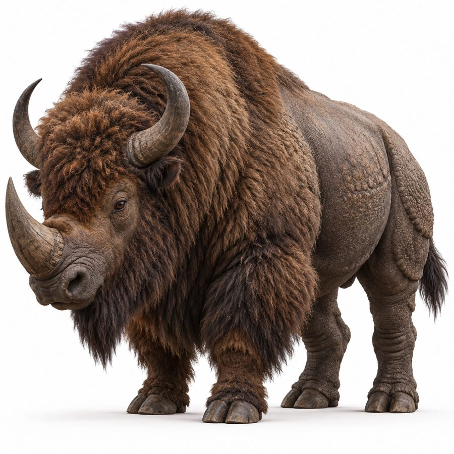

Ruqorith
Rhino-bison hybrids that graze in a seasonal loop and plow volcanic ash into the soil as they go.
- Group
- Plains and agriculture
- Tags
- grazer Ruqoravael
- Range
- Native to Ruqoravael, the volcanic savanna belt. Canon
- Movement
- They move south to the edges of the northern forests and back, following wherever ash-fall is freshest. Canon
Ecological engineers
In grazing they plow the ash into the soil. Ruqoravael’s fertility depends on their continued presence. Canon
Uses
- Hide. Thick armor leather, buttery ceremonial leather, suede or embossed leather depending on treatment. The backbone of practical leatherwork. Canon
- Horn. Doubles as an ivory substitute. Canon
- Manure. A real secondary export, traded through House Vulqaq. Canon
- Skulls. Made into the standard harvest-festival drum, the Ruqorathum. Canon
Related animals
The Vulqorith, a purpose-bred war mount, is its military cousin and is raised alongside the Ruqorith herds. Xathelun and Droneth hunt stray calves.
